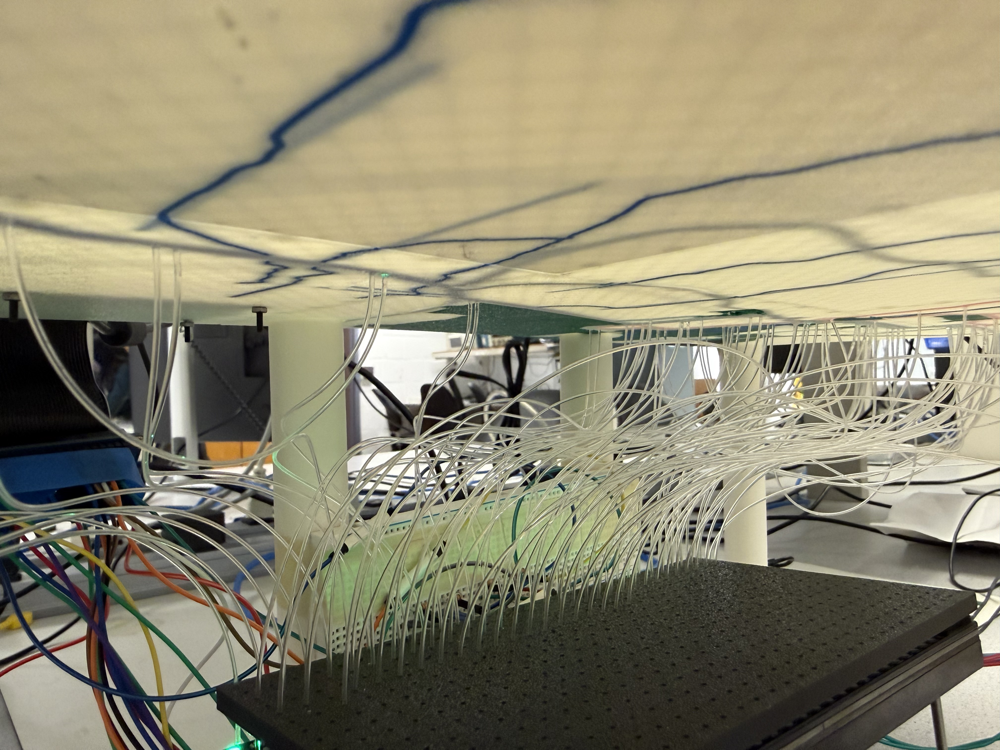

Big Red Routes
Selena Zhang (scz6), Helen Ni (hn347)
5.9.2026
Introduction.
Big Red Routes is an interactive TCAT (Tompkins Consolidated Area Transit) bus tracking display designed for the Cornell and Ithaca community. Our initial inspiration came from a similar project we saw online for the Manhattan subway system. Because the TCAT is such an essential part of Cornell University's transportation system and students use it daily, we wanted to create our own version for Ithaca.
Objective
The objective of this project was to design a Raspberry Pi-based system that uses real-time TCAT bus data to show the current locations of buses on a physical 3D-printed map. Out system focuses the 30, 81, and 92 bus routes. We wanted to add creative design through CAD and 3D printing, while also involving embedded softare, electronic hardware, data scraping, and user interaction. This is our final project for the Design with Embedded Operating Systems course, designing microcontroller-based systems using embedded Linux and debugging solutions on the target Rapsberry Pi microcontroller.Design & Testing.
The 12" by 21" map of Ithaca was hand-traced in Figma using vectors. The designs were then exported as an SVG and imported into Fusion to extrude, color, and 3D print. We had to print the map as 6 individual "puzzle" pieces, and additionally printed 8 pillars to support and elevate the map, making room underneath to house an LED matrix, fiber optic cables, and electrical wiring. When a bus arrives at a stop, it lights up on the map, with a green light signifying that the bus is moving outbound (North to South), and a red light signifying that the bus is moving inbound (South to North). In total, we tracked 89 bus stops. With 89 stops to light up, we used 89 cuts of 1mm fiber optic cable to transfer light from an LED pixel on the matrix panel to each hole on the map that represents one bus stop. To secure each fiber optic cable over its respective LED pixel, we 3D-printed a 5mm tall board with 1mm diameter holes to hold the cables on top of the LED matrix. Big Red Routes provides users with two different modes: "Track a Route" and "Find a Route". In "Track a Route" mode, users can choose between each of the 3 routes to track. For example, if the user clicks the button for the route 30, only buses for the 30 will be displayed on the map. In "Find a Route" mode, users select a start and end destination, and an optimal path that prioritizes least transfers and least stops is lit up on the map. At startup, active buses for all 3 routes are automatically displayed on the map. A quit option is available to stop the program. ADD - Key design iterations and major milestones - Challenges encountered and how you resolved them - Testing procedures and results verifying functionality
Hardware
The hardware consists of a 16x32 Adafruit LED matrix, 4 buttons, an Adafruit piTFT display screen, an audio speaker, and a Raspberry Pi 4. The RPi and piTFT are mounted on a corner of the map, with the piTFT serving as a menu and the buttons used to navigate. The LED matrix provided a much simpler and cleaner alternative to using tens of individual LEDs in order to light up the bus stops. Because our LED matrix utilized the GPIO pins that the RPi's built-in buttons use, we attached 4 external buttons with colored button caps so that we could use other free GPIO pins, and users can see a clearer visual difference between the colors of each button. Lastly, we incorporated a speaker that announces when a bus arrives at a new stop on the specific route being tracked, providing the bus number, direction, and stop name.

testing light transfer

electrical wiring

map underside
- RPi to LED Matrix Wiring
-
GPIO Pin Matrix Pin Signal Name 5 1 Red 1 13 2 Green 1 6 3 Blue 1 12 5 Red 2 16 6 Green 2 23 7 Blue 2 22 9 Line Selection A 26 10 Line Selection B 27 11 Line Selection C 20 12 Line Selection D 17 13 CLK 21 14 Latch 4 15 Output Enable GND 4, 8, 16 GND
- Button Wiring
-
Button GPIO Pin White Button 18 Green Button 14 Blue Button 19 Red Button 15
Software
Using the Raspberry Pi OS kernel 6.1.21-v8+ #1642 SMP PREEMPT, our software components include real-time TCAT bus data, piTFT GUI, LED matrix pixel highlighting, queueing audio announcements, and GPIO button control.
TCAT API Polling
The software polls TCAT's live vehicle feed every 5 seconds to get updated bus information. We use the TCAT GTFS-realtime feed, which returns data such as the bus route, trip ID, current stop ID, vehicle ID, current status, occupancy, and timestamp. The program filters this data so we only track the routes relevant to our project. In the background, a polling loop repeatedly fetches this vehicle data and updates the current state of each bus. This lets the LED matrix and PiTFT display stay updated as buses move from stop to stop. The polling runs in its own thread so the rest of the system, like the GUI and buttons, can keep working at the same time.Dictionary Storage and LED Pixel Mapping
A major part of the project is storing bus stop information in dictionaries. Each route has its own dictionary that maps a TCAT stop ID to the stop name and the matching pixel location (x,y) on the LED matrix. The software combines these route dictionaries into global lookup tables. One dictionary maps each (route_id, stop_id) pair to a stop name, and another maps each (route_id, stop_id) pair to a pixel coordinate. When live TCAT data says a bus is at a certain stop, the program uses the bus's route ID and stop ID to look up the correct LED pixel. Then it lights that pixel on the matrix.LED Matrix Control
The LED matrix is controlled using the rgbmatrix library. We created a BusLEDMatrix class that handles clearing the matrix, setting individual pixels, converting color values, and redrawing the display. The matrix stores active pixels in a dictionary so it knows which locations should currently be lit. Different modes use the LED matrix in different ways. In route display mode, the matrix lights up the current locations of buses on the selected route. In trip-planning mode, it can highlight a selected stop, lock in a start or end stop, and then light up the full planned route after the route is found.Audio Announcements
We added a separate AudioAnnouncer class to vocalize when buses move. When a bus arrives at a stop, the program can generate a spoken message with the route number, bus ID, stop name, and direction. The messages are placed into a queue and spoken one at a time using espeak. The audio system runs in a background thread so announcements do not freeze the rest of the program.GPIO Button Control
The physical buttons are handled using the RPi.GPIO library. We used four buttons: white, green, blue, and red. Each button has a different role depending on the current screen. For example, the white button is used to select or go back, while the green, blue, and red buttons can select routes or scroll through stops. The GPIO button loop keeps track of the current screen, selected mode, selected route, trip direction, start stop, and end stop. Button presses send commands to the GUI through a queue and also send commands to the LED matrix through another queue. This keeps the button logic separate from the display logic, which makes the program easier to manage.Find a Route Algorithm
The “Find a Route” feature lets the user choose a starting stop and an ending stop then finds the best route between them, prioritizing the path with the fewest transfers. To do this, each bus stop is represented as a node in a graph. Stops on the same route are connected by “ride” edges, and valid transfer stops are connected by “transfer” edges. The algorithm searches through possible paths from the starting stop to the ending stop. Each path is scored based on the number of transfers, number of ride steps, and total path length. The best route is the one with the lowest score, meaning it uses the fewest transfers first, then the shortest ride path if there is a tie. Once the best path is found, the program returns the route segments and pixel locations. Those pixels are then lit on the LED matrix so the user can physically see the route they should take on the map.PiTFT GUI
The PiTFT interface is built using pygame. The GUI displays the home screen, route selection screen, trip finder screen, stop picker screens, selected trip summary, and live bus information. It also shows specific information for each active bus being displayed, such as bus status, last stop, destination, direction, and occupancy.Results & Conclusions.
The project performed as intended because the final system was able to display real-time TCAT bus information on the physical 3D-printed map using LEDs. It met the original goals from our project proposal by tracking buses for selected TCAT routes and showing their locations in an interactive way. We also went beyond the original proposal by adding extra features, including GPIO button controls, a “Find a Route” mode, and audio announcements. Most of the changes we made were not major changes to the project idea, but improvements that built on the original concept and made the system more useful and interactive. The only main adjustment was changing some of the routes we decided to use, but the overall purpose of the project stayed the same.
One aspect that worked well was that the hardware and software worked together successfully. The Raspberry Pi, piTFT screen, LED matrix, buttons, and fiber optic cables were able to be connected into one working system. The real-time bus data is updated about every 10 seconds, and the button controls felt responsive because the button polling was fast with a small debounce delay. The 3D-printed map and fiber optic cable setup also worked well after testing different designs and hole sizes. Another part that worked well was organizing the code into separate files, such as files for the GUI, LED matrix, bus tracking, button controls, audio, and route data. This made the project easier to manage compared to having everything in one large file.
Some parts did not work as expected at first and required troubleshooting. The touchscreen was not very responsive, so we decided that using physical GPIO buttons was more reliable for user interaction. Route 92 also caused issues because it does not always have live data during the day, so we had to account for that by using recorded data when live data was unavailable. The “Find a Route” feature was also challenging because we had to manually create new stop dictionaries and test different route combinations. Since the dictionaries were made by hand, we found that some stops that were both inbound and outbound stops were missing and had to be fixed. Overall, the main challenges came from combining many different parts of the system, but most of them were solved through testing, debugging, and refining the design.
Future Work.
With additional time and resources, we could improve the project by adding more TCAT routes so the map would be useful for more students and Ithaca residents. Right now, the project focuses on routes 30, 81, and 92, but adding more routes would make the system feel more complete. With more routes, this would also be a good opportunity to optimize our code. Instead of using lists of dictionaries, we could improve our code by using methods like classes for our bus data. We could also add labels to the physical map, such as major Cornell buildings, Collegetown, the Commons, and other recognizable locations, so users could understand the map more quickly without needing to already know the stop names.
Another improvement would be making the “Find a Route” feature more advanced. Currently, it helps users choose a route based on the starting and ending stops, but with more time, we could connect this mode to the real-time TCAT data. This would allow the system to show estimated arrival times, whether a bus is currently nearby, and whether walking might be faster than waiting for the bus. This would make the feature more practical for real use instead of only showing the possible route path.
We could also improve the user interface on the piTFT screen. Since the touchscreen was not as reliable, we used physical buttons, which worked better. However, the interface could be made more intuitive by using fewer words, clearer menus, and more visual icons. This would make it easier for users to navigate the system quickly. The audio announcements could also be improved by using a smoother and more natural-sounding voice, similar to Siri, so the bus information is easier to understand.
2026. Selena Zhang, Helen Ni